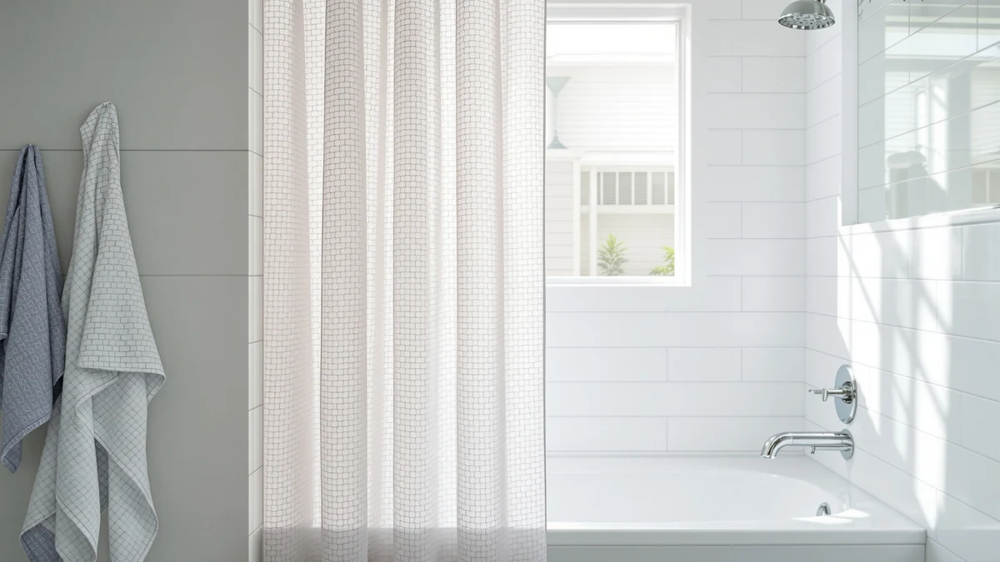

Quick Answer
We compared seven shower curtains across white, grey, blue, and patterned options to find the best shower curtain color for most bathrooms, weighing material, price, and verified owner reviews. The ALYVIA SPRING Waterproof Fabric Shower wins for most people: a neutral, water-resistant panel with a 4.6-star rating across 45,457 reviews at $8.99.
Our pick: ALYVIA SPRING Waterproof Fabric Shower, $8.99 Check Price on Amazon
Things to Know Before You Buy
- Room size and light should drive your shower curtain color choice. A small or dim bathroom generally reads brighter behind a white or light grey panel like the ALYVIA SPRING or the Amazon Basics Waffle Weave, while a bathroom with good natural light can carry a bolder tone such as the CutebriCase Ombre Blue without feeling closed in.
- Solid colors show water spots faster than prints. The Floral Shower Curtain Marble Flower's blue-and-white pattern hides mineral spotting and soap residue better than a plain pastel panel, which matters if you deal with hard water.
- Standard panel size is 72 by 72 inches. Five of the seven picks here fit a standard rod at that size; the WellColor liner runs a shorter 72 by 66 inches, and the River Dream cotton curtain measures 71 by 74 inches, so check your rod height first.
- Material changes how a color reads under bathroom lighting. The polyester and PEVA panels here, including the Aiyufeng Moga Grey and Amazon Basics Waffle Weave, pick up a slight sheen under vanity lighting, while the 100% cotton River Dream curtain looks more matte and muted.
- A clear liner protects a bold curtain color without changing how it looks. Hanging a liner like the WellColor behind a printed or dark curtain keeps splashing off the fabric while the color still reads as intended from outside the tub.
Trend matters less here than your bathroom's size, light, and the colors already in the room. A white or pale grey panel bounces light around a small, windowless bathroom, while a bathroom with a big window or a skylight can carry a saturated blue or a busy print without feeling cramped. Pattern also does practical work: a marble-effect print or an ombre gradient hides water spots and soap scum far better than a single flat pastel does.
We compared seven shower curtains across white, grey, blue, and printed options, weighing material, panel size, current price, and verified Amazon review counts rather than marketing copy. Prices span $8.97 to $37.99, and every curtain here holds at least a 4.5-star average, with review counts ranging from a single early rating to more than 45,000.
The ALYVIA SPRING Waterproof Fabric Shower leads the group for most bathrooms: a neutral, water-resistant panel with the strongest combination of rating and review volume at $8.99. If you want a grey solid, a printed pattern, or a true cotton curtain instead, we cover the honest tradeoffs of each pick below.
Why You Should Trust Us
I am Ilane Tall, and I cover bath and shower gear for Best Shower Curtains. For this guide to the best shower curtain color options, I looked at how each curtain's material and finish reads under normal bathroom lighting, rather than how it photographs in a product listing.
We do not own or install every curtain we cover. Instead, we research each listing closely, check the material against the manufacturer's own description, and weigh the star rating against the review count, since a 4.7-star average built on a couple thousand reviews carries more weight than the same average built on a handful. Every price, material, and rating in this guide comes from the current Amazon listing.
How We Picked
We started with a wide list of shower curtains spanning solid neutrals, a grey, a floral print, an ombre gradient, and a cotton option, then narrowed the field by rating, review count, and price spread to find genuine best shower curtain color candidates rather than seven shades of the same neutral.
We excluded curtains rated under 4.0 stars and generally kept only listings with enough review volume to trust the average, with one exception: the River Dream Cotton Blend earns its spot as the only true 100% cotton pick in a field where polyester and PEVA otherwise dominate, even though its review count is thin so far. We also made sure the lineup covered a real range of colors and patterns instead of near-identical white panels.
How We Compared
We compared each of these shower curtain color options on the same facts: listed material, panel size, current price, star rating, and total review count, all pulled from the live Amazon listing rather than promotional copy. Where a listing leaned on a pattern or gradient, we noted how that print interacts with a small, heavily tiled bathroom versus an open one.
We also weighed review count against rating, because a strong average built on a single review, like the River Dream Cotton Blend's, carries far less certainty than the Aiyufeng Moga Grey's 4.5 stars across 45,457 reviews. Reviewers consistently note whether a color holds up after repeated washing and whether a pattern looks as advertised once it is actually hanging, and we folded that owner feedback into the pros and cons for each pick below.
Our Picks

ALYVIA SPRING Waterproof Fabric Shower
What we like
- Neutral tone works as a blank backdrop for colorful towels, mats, or tile
- Polyester and PEVA blend resists splashing without a separate liner in most stall showers
- 45,457 reviews back up the 4.6-star average with a huge sample size
Flaws but not dealbreakers
- No bold pattern or color if you want the curtain itself to be the statement piece
- Basic finish looks plain next to the printed picks in this guide
| Material | Polyester / PEVA |
| Size | 72x72 |
The ALYVIA SPRING Waterproof Fabric Shower tops this guide because it solves the biggest color question for most bathrooms: what to hang when you are not sure yet. At $8.99, it is also one of the least expensive picks here, and the 45,457 reviews behind its 4.6-star average give it the largest verified track record in the lineup by a wide margin.
A neutral panel like this one keeps the curtain from competing with your towels, bath mat, or tile, which matters most in a small or windowless bathroom where a bold color can make the space feel tighter. The polyester and PEVA blend also resists splashing well enough that many owners skip a separate liner in a stall shower. The tradeoff is a plain backdrop rather than a color statement, so if you want the curtain itself to carry the room's palette, the Aiyufeng Moga Grey or the CutebriCase Ombre Blue further down this list make a stronger case.

Amazon Basics Waffle Weave Shower
What we like
- Waffle weave texture adds visual interest without introducing a strong color
- 22,439 reviews support a consistent 4.6-star average
- Neutral tone pairs easily with colored towels, mats, or shower hooks
Flaws but not dealbreakers
- Costs more than the ALYVIA SPRING for a similar neutral palette
- Waffle texture traps a bit more lint than a smooth panel
| Material | Polyester / PEVA |
| Size | 72x72 |
The Amazon Basics Waffle Weave Shower gives you a middle path between a flat plain panel and a full pattern. At $12.55 it costs a few dollars more than the top pick, and its 22,439 reviews back a matching 4.6-star average, so the extra texture has not come at the cost of reliability.
Waffle weave adds a subtle grid texture that catches light differently than a smooth polyester panel, which reads as more intentional without pushing the room toward a specific color. Because the base tone stays neutral, it works in a bathroom where you want to swap out towels or a bath mat seasonally without replacing the curtain. Reviewers consistently note that the textured weave shows fewer visible water spots than a glossy PEVA finish, though it can hold a bit more lint over time than a smooth surface.

Aiyufeng Moga Grey Shower Curtain
What we like
- Solid grey stays looking clean longer between washes than white does
- Matches a wider range of tile and fixture finishes than a stark white curtain
- Priced at $8.97, among the least expensive picks in this guide
Flaws but not dealbreakers
- Slightly lower 4.5-star average than most of the other picks here
- Flat grey can read as cold in a bathroom with cool-toned tile
| Material | Polyester / PEVA |
| Size | 72x72 |
If white feels too stark, the Aiyufeng Moga Grey Shower Curtain is the straightforward answer to the best shower curtain color question for a modern bathroom. At $8.97 it costs about the same as the ALYVIA SPRING, and it holds a 4.5-star average across 45,457 reviews, giving it nearly the same verified track record as the top pick.
Grey sits between a stark white and a full color statement, and it hides everyday water spots and soap scum more forgivingly than white does between cleanings. It also plays well with brushed nickel or matte black fixtures, which can look harsh against a bright white panel. The one real tradeoff is a slightly lower rating than the other high-review picks in this guide, though the gap from 4.6 to 4.5 stars is small enough not to change the recommendation for a bathroom leaning toward a cooler palette.

Floral Shower Curtain Marble Flower
What we like
- Marble-and-floral print hides water spots and soap residue better than a solid color
- Highest rating in this guide at 4.7 stars
- Works as a focal point so towels and mats can stay simple
Flaws but not dealbreakers
- Costs more than the plain neutral picks in this guide
- Busy print will clash with an already patterned tile or wallpaper
| Material | Polyester / PEVA |
| Size | 72x72 |
The Floral Shower Curtain Marble Flower is the pick for a bathroom that wants its color and pattern to come from the curtain itself rather than accessories. At $19.99 it costs more than the neutral options here, but its 4.7-star average across 2,505 reviews is the highest rating in this entire lineup.
A marble-effect floral print in blue and white tones does double duty: it brings in color without you having to match a specific paint or tile shade, and the busy pattern hides everyday water spots and soap scum far better than a flat pastel would. Owners report that the print stays vivid through regular washing rather than fading to a duller tone. The main tradeoff is that a pattern this present needs a fairly plain bathroom around it, so it is a poor match if your tile or wallpaper already carries its own busy design.

CutebriCase Ombre Blue Modern Geometric
What we like
- Ombre blue gradient gives you real color without a busy print
- Ties for the highest rating in this lineup at 4.7 stars
- Geometric fade reads as modern rather than novelty
Flaws but not dealbreakers
- Most expensive pick in this guide at $21.99
- A saturated color like this can make a small, dim bathroom feel more closed in
| Material | Polyester / PEVA |
| Size | 72x72 |
The CutebriCase Ombre Blue Modern Geometric is the answer if you have decided the best shower curtain color for your bathroom is an actual color rather than a neutral. At $21.99 it is the priciest pick here, and it shares the top 4.7-star average with the floral pick, backed by 2,983 reviews.
An ombre gradient moves from a deep blue at the top to a lighter shade near the bottom, which gives you real, saturated color while still reading as deliberate rather than overwhelming. It works best in a bathroom with a window or strong overhead lighting, since a dark, low-light space can feel smaller behind a saturated curtain. Reviewers consistently note that the color transition looks smooth and does not come across as printed or flat, which is the detail that makes an ombre curtain look intentional instead of cheap.

WellColor Short Shower Curtain Liner
What we like
- Shorter 72 by 66 inch size fits a stall shower without pooling on the floor
- Protects a colored or printed curtain from direct water contact
- 4.6-star average across 2,392 reviews
Flaws but not dealbreakers
- Not a standalone color statement, since it is meant to sit behind another curtain
- Shorter length will not fit a standard-height rod meant for a 72-inch drop
| Material | Polyester / PEVA |
| Size | 72x66 |
The WellColor Short Shower Curtain Liner solves a problem the other six picks in this guide do not address directly: how to protect a colored or patterned curtain from direct water without changing how that color looks from outside the tub. At $13.99, it holds a 4.6-star average across 2,392 reviews.
Hanging a liner like this behind a print such as the Floral Marble Flower or the CutebriCase Ombre Blue keeps water off the decorative fabric while letting the front-facing color read exactly as intended. The 72 by 66 inch size is built for a shorter stall shower rather than a standard tub-height rod, so measure your setup before ordering. Owners report that the shorter drop keeps the liner from bunching or pooling water on the floor, which is a common complaint with a full-length liner in a smaller stall.

River Dream Cotton Blend No
What we like
- 100% cotton reads more matte and natural than the polyester and PEVA picks in this guide
- 71 by 74 inch size offers slightly more coverage than a standard 72 by 72 panel
- Fabric weight gives it a heavier drape than the lighter polyester curtains
Flaws but not dealbreakers
- Not waterproof on its own, so it needs a separate liner like the WellColor
- Only one review so far, the thinnest track record in this guide by a wide margin
| Material | 100% cotton |
| Size | 71x74 |
The River Dream Cotton Blend is the only true 100% cotton curtain in this guide, and that changes how its color reads compared to the six polyester and PEVA picks above. At $37.99 it is also the most expensive option here, and with a single review so far behind its 4.6 rating, it has the thinnest track record in the lineup.
Cotton absorbs light instead of reflecting it, so a natural, undyed tone looks softer and more matte under bathroom lighting than the same shade would in a glossy polyester blend. The 71 by 74 inch size runs slightly larger than the standard 72 by 72 footprint used elsewhere in this guide, which is worth checking against your rod width. Because cotton is not waterproof, you need to hang a separate liner behind it, and with only one review on record, we would wait for more verified feedback before recommending it over the higher-review picks above for most bathrooms.
Quick Comparison
| Product | Material | Price | Rating | Best for | Get it |
|---|---|---|---|---|---|
| ALYVIA SPRING Waterproof Fabric Shower | Polyester / PEVA | $8.99 | 4.6 | Small or dim bathrooms | View on Amazon → |
| Amazon Basics Waffle Weave Shower | Polyester / PEVA | $12.55 | 4.6 | Texture without bold color | View on Amazon → |
| Aiyufeng Moga Grey Shower Curtain | Polyester / PEVA | $8.97 | 4.5 | Modern grey palettes | View on Amazon → |
| Floral Shower Curtain Marble Flower | Polyester / PEVA | $19.99 | 4.7 | Pattern-forward bathrooms | View on Amazon → |
| CutebriCase Ombre Blue Modern Geometric | Polyester / PEVA | $21.99 | 4.7 | Bold color statements | View on Amazon → |
| WellColor Short Shower Curtain Liner | Polyester / PEVA | $13.99 | 4.6 | Protecting a colored curtain | View on Amazon → |
| River Dream Cotton Blend No | 100% cotton | $37.99 | 4.6 | A natural cotton look | View on Amazon → |
The Competition
The River Dream Cotton Blend carries the highest price and the only true cotton fabric in this guide, but its single review means we cannot vouch for how its color holds up over time the way we can for the ALYVIA SPRING or the Aiyufeng Moga Grey, each of which carries tens of thousands of verified reviews. The Aiyufeng Moga Grey also lands at 4.5 stars, the lowest average in the lineup, though the gap from the rest of the field is small.
We also passed over plain, colorless vinyl liners with no fabric option, since they do not answer a best shower curtain color question at all, and we excluded any curtain rated under 4.0 stars regardless of price. After weighing material, pattern, price, and review history across all seven picks, the best shower curtain color for most bathrooms still comes down to the neutral, heavily reviewed ALYVIA SPRING, with the Aiyufeng Moga Grey and the CutebriCase Ombre Blue as the strongest color-forward alternatives.
Frequently Asked Questions
What is the best shower curtain color for a small bathroom?
White or light grey generally works best in a small or dim bathroom because it reflects available light instead of absorbing it. The ALYVIA SPRING Waterproof Fabric Shower and the Aiyufeng Moga Grey Shower Curtain in this guide both work as light, neutral backdrops that keep a compact space from feeling smaller.
Do patterned shower curtains hide water spots better than solid colors?
Patterned shower curtains generally do hide water spots better than solid colors. A single-tone pastel or dark panel reveals mineral spotting and soap residue more clearly than a busy print does, which is why curtains like the Floral Shower Curtain Marble Flower and the CutebriCase Ombre Blue in this guide use pattern and gradient to hide those marks between washes.
Does a shower curtain liner need to match the curtain color?
A liner does not need to match the curtain color. A liner like the WellColor Short Shower Curtain Liner in this guide sits behind the decorative curtain and protects it from direct water, so a clear or white liner works with any curtain color in front of it without changing how that color looks from outside the tub.